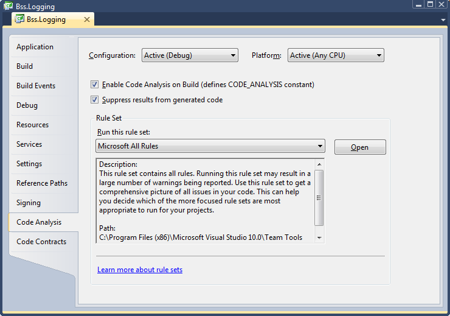
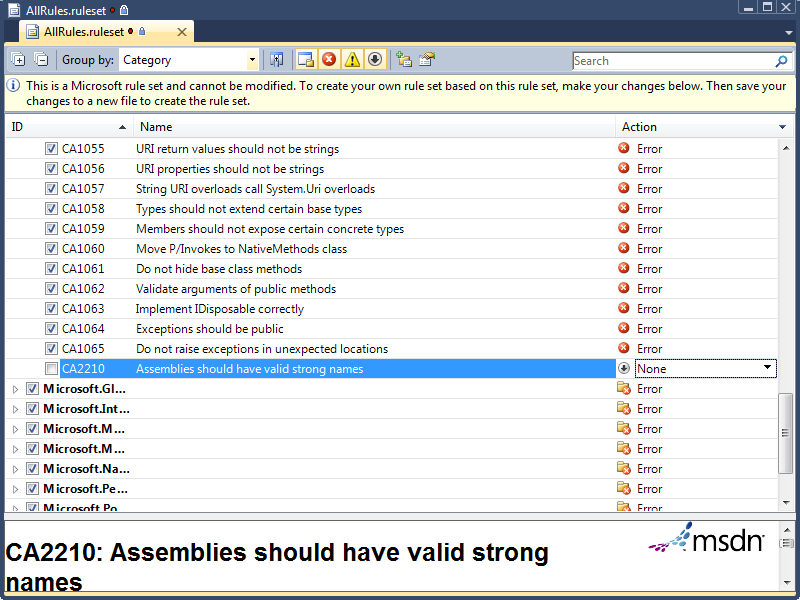

Tag: assembly
South Florida Code Camp 2019
Posted by bsstahl on 2019-03-03 and Filed Under: event
Thanks again to all the organizers, speakers and attendees of the 2019 South Florida Code Camp. As always, it was an amazing and fun experience.
The slides for my presentation are online Intro to WebAssembly and Blazor and the Blazor Chutes & Ladders Simulation sample code can be found in my AIDemos GitHub Repo.
Tags: assembly blazor code camp code sample development framework introduction microsoft presentation
Testing the Untestable with Microsoft Fakes
Posted by bsstahl on 2017-03-20 and Filed Under: development
It is fairly easy these days to test code in isolation if its dependencies are abstracted by a reusable interface. But what do we do if the dependency cannot easily be referenced via such an interface? Enter Shims, from the Microsoft Fakes Framework(formerly Moles). Shims allow us to isolate our testing from any dependent methods, including methods in assemblies we do not control, even if those methods are not exposed through a reusable interface. To see how easy it is, follow along with me through this example.
In this sample code on GitHub, we are building a repository for an application that currently gets its data from a file exported from a system that tracks scheduled meetings. It is very likely that the system will, in the future, expose a more modern interface for that data so we have isolated the data storage using a simple Repository interface that has one method. This method, called GetMeetings returns a collection of Meeting entities that start during the specified date range. The method will return an empty collection if no data is found matching the specified criteria, and could throw either of 2 custom errors, a PermissionsExceptionwhen the user does not have the proper permissions to access the information, and a DataUnavailableException for when the data source is unavailable for any other reason, such as a network outage or if the data file cannot be located.
It is important to point out why a custom exception should be thrown when the data file is not found, rather than allowing the FileNotFoundException to bubble-up. If we allow the implementation-specific exception to bubble, we have exposed an implementation detail to the caller. That is, the calling code is now aware of the fact that this is a file system implementation. If code is written in a client that traps for FileNotFoundException, then the repository implementation is swapped-out for a SQL server implementation, the client code will have to change to handle the new types of errors that could be thrown by that implementation. This violates the Dependency Inversion principle, the “D” from the SOLID principles. By exposing only a custom exception, we are hiding those implementation details from the caller.
Downstream clients can easily test code that uses this repository without having to actually access the repository implementation because we have exposed the IMeetingSourceRepository interface. However, it is a bit more difficult to actually test the repository implementation itself. We have a few options here:
- Create data files that hold known data samples and load those files during unit testing.
- Create a wrapper around the System.IO namespace that exposes an interface, such as in the System.IO.Abstractions project.
- Don’t test any code that requires reaching-out to the file system.
Since I am of the opinion that 100% code coverage is both reasonable, and desirable (although not a measurable goal), I will summarily dispose of option 3 for the purpose of this analysis. I have used option 2 many times in my life, and while employing wrapper code is a valid and reasonable solution, it adds additional code to my production deployments that is very limited in terms of what it adds to the loose-coupling of my solution since I already am loosely-coupled to this implementation via the IMeetingSourceRepository interface.
Even though it is far from a perfect solution (many would consider them more integration tests than unit tests), I initially selected option 1 for this implementation. That is, I created data files and deployed them along with my tests. You can see the test files I created in the Data folder of the MeetingSystem.Data.FileSystem.Test project. These files are deployed alongside my tests using the DeploymentItem directive that decorates the Repository_GetMeetings_Should class of the test project. Using this method, I was able to create tests that:
- Verify that the correct # of meetings are returned from a file
- Verify that meetings are properly filtered by the StartDateTime of the meeting
- Validate the data elements returned from the file
- Validate that the proper custom exception is thrown if a FileNotFoundException is thrown by the underlying code
So we have verified nearly everything we need to test in our implementation. We’ve verified that the data is returned properly, and that one of our custom exceptions is being returned. But what about the PermissionsException? We were able to simulate a FileNotFoundException in our tests by just using a bad filename, but how do we test for a permissions problem? The ReadAllText method of the File object from System.IO will throw a System.Security.SecurityException if the file cannot be read due to a permissions problem. We need to trap this exception and throw our own exception, but how can we validate that we have successfully done so and that the functionality remains intact through future refactoring? How can we simulate a permissions exception on a file that we have enough permission on to deploy to a test folder? Enter Shims from the Microsoft Fakes Framework.
Instead of having our tests actually reach-out to the file system and actually try to load a file, we can intercept calls to the System.IO.File.ReadAllText method and have those calls execute some delegate code instead. This code, which we write in our test methods, can be specific to each test and exist only within the context of the test. As a result, we are not deploying any additional code to production, while still thoroughly validating our code. In fact, using this methodology, I could re-implement my previous tests, including my test data in the tests themselves, making these tests better unit tests. I could then reserve tests that actually reach out to files for integration test libraries that are run less frequently, and perhaps even behind the scenes.
Note: If you wish to follow-along with these instructions, you can grab the code from the DemoStart branch of the GitHub repo, rather than the Master branch where this is already done.
To use Shims, we first have to create a Fakes Assembly. This is done by right-clicking on the System reference in the test project from Visual Studio 2017, and selecting “Add Fakes Assembly” (full framework only – not yet available for .NET Core assemblies). Be sure to do this in the test project since we don’t want to actually deploy the Fakes assembly in our production code. Using the add fakes assembly menu item does 2 things:
- Adds a reference to Microsoft.QualityTools.Testing.Fakes assembly
- Creates 2 .fakes XML files in the Fakes folder within the test project. These items are built into corresponding fakes dll files that are deployed with the test project and used to provide stub and shim objects that mimic the objects in the selected assemblies. These fake objects reside in the same namespace as their “real” counterparts, except with “Fakes” on the end. Thus, our fake File object will reside in the System.IO.Fakes namespace.

The next step in using shims is to create a ShimsContext within a Using statement. Any method calls that execute within this context can be intercepted and replaced by our delegates. For example, a test that replaces the call to ReadAllText with a method that returns a single line of constant data can be seen below.
Methods on shim objects are referenced through properties of the fake object. These properties are of type FakesDelegate.Func and match the signature of the method being shimmed. The return data type is also appended to the property name so that each item’s signature can be represented with a different property name. In this case, the ReadAllText method of the File object is represented in the System.IO.Fakes.File object as a property called ReadAllTextString, of type FakesDelegate.Func<string, string>, since the method takes a string parameter (the path of the file), and returns a string (the text contents of the file). If we assign a method delegate to this property, that method will be executed in place of the call to System.IO.File.ReadAllText whenever ReadAllText is called within the ShimContext.
In the gist shown above, the variable p represents the input parameter and will hold the path specified in the test (in this case “April2017.abc”). The return value for our delegate method comes from the constant string dataFile. We can put anything we want here. We can replace the delegate with a call to an anonymous method, or with a call to an existing method. We can return a value gleaned from an external source, or, as is needed for our permissions test, throw an exception.
For the purposes of our test to verify that we throw a PermissionsException when a SecurityException is thrown, we can replace the value of the ReadAllTextString property with our delegate which throws the exception we need to test for, as seen here:
System.IO.Fakes.ShimFile.ReadAllTextString =
p => throw new System.Security.SecurityException("Test Exception");
Then, we can verify in our test that our custom exception is thrown. The full working example can be seen by grabbing the Master branch of the GitHub repo.
What can you test with these Shim objects that you were unable to test before? Tell me about it @bsstahl.
Tags: abstraction assembly code sample framework fakes interface moles mstest solid tdd testing unit testing visual studio
Is a Type an Implementation of an Interface?
Posted by bsstahl on 2016-11-17 and Filed Under: development
One of the techniques I recommend highly in my Simplify Your API talk is the use of extension methods to hide the complexity of lower-level API functionality. A good example of a place to use this methodology came-up last night in a great Reflection talk by Jeremy Clark (Twitter, Blog) at the NorthWest Valley .NET User Group.

Jeremy was demonstrating a method that would spin-through an assembly and load all classes within that assembly that implemented a particular interface. The syntax to do the checks on each type were just a bit more obtuse than Jeremy would have liked them to be. As we left that talk, I only half-jokingly told Jeremy that I was going to write him an extension method to make that activity simpler. Being a man of my word, I present the code below to do just that.
Tags: assembly api class code sample coding-practices community csharp development extension method framework generics interface presentation professional development reflection user group
Windows 8 Store Development for Enterprise Devs
Posted by bsstahl on 2013-02-28 and Filed Under: development
or, How I found my Passion for Windows 8 Store App Development
Update: My first Windows Store app was published on March 27, 2013.
I don't have any apps in the Windows 8 Store yet. For that matter, I don't have any apps in the Windows Phone store, or the Apple or Android stores either. I have many ideas for apps, and a number of them in the works for both Windows 8 and Windows Phone, but I have nothing real to show for it yet. Nothing to show for several years of attending sessions at conferences, user groups, and code camps on building these apps; for many hours of hacking on front-end interfaces and business logic. Don’t get me wrong, I've wanted to build these apps, but I didn't have that burning desire that I usually get when I am solving problems with software. You know that desire, the one that compels you to sit in front of a computer for hours at a time until you've completed a solution. I didn't have it.
This recently changed for me -- let me explain.
I have spent most of the last 20 years building enterprise web applications that do most of the work on the server side. My user interfaces have been built in HTML, with some JavaScript for validation and Ajax for dynamic post-backs, but all business rules were housed entirely on the server in either C#, VB or something similar. Even before .NET, in the classic ASP days, my logic executed on the server with VBScript calling components created in Visual Basic. Before that, it was Pascal programs spitting out pure HTML to the console which was then redirected to the browser stream by the web server. As a result, I am very comfortable with using HTML for layout, and multi-purpose languages like C# and VB.Net for the business logic and data access.
In the app world however, this combination of technologies has seemed out-of-reach. In Windows Phone development, I could use C#, but needed to use XAML for layout and style, a technology that I have not yet been able to get comfortable with. For Windows 8 store apps there are more options, including HTML5/JavaScript apps, but I have never been comfortable writing code in JavaScript. The advent of TypeScript has brought us even closer to a solution in my comfort zone where I can get almost a C# style experience with HTML5 as my layout mechanism, but I am still missing key features like LINQ and generics.
Enter Windows Runtime Components. I say “enter”, as if they were new -- they're not, I just apparently allowed myself to forget about them. RT Components can be written in C# (and other languages), but can be called from JavaScript or any Windows 8 Store code, just as if they were written in that same language. RT components can also call into any .NET code that can be executed in a Windows Store App. As a result, I have the power of C# and the .NET Framework at my disposal while writing a JavaScript app. All I have to do is wrap my .NET Windows Store compatible libraries in an RT component, and use JavaScript to bind it to my HTML layout. Since I have been using Portable Libraries for most of my business logic for some time now, and those libraries that aren't yet portable, are generally easily translated, most of my .NET business logic is already available for me to wrap in an RT Component.
With the primary business functionality done in C#, it becomes a relatively trivial exercise in JavaScript to bind my RT model to the HTML components in my UI. This experience is completely comfortable to me, and in using this process, I have found the passion I was missing for building these apps. I will have several apps in the Windows 8 store in the next few weeks with more to follow after that. I will also be writing about my methods in building these apps, from the perspective of an enterprise developer. Hopefully, this will allow others to find the passion for creating these apps as I have. In the meantime, here are a few tips you can start using now to ease the transition into building apps:
- Use portable libraries wherever possible, especially for business logic.
- Use dependency injection to make non-portable dependencies available to portable libraries. This will allow your business logic access to platform-specific functionality (such as network access) without sacrificing portability.
- Do as much of the work as possible in the underlying .NET libraries and keep the RT Component as thin a translation layer as possible. I will be exploring techniques for this in the near future. Possibilities here include making this layer either a View-Model or a Repository implementation.
- The only logic in the JavaScript code should be that which is required to bind the RT Component to your controls. If you are doing more than setting event handlers and other control properties in your JavaScript, you might want to think about moving that functionality into a lower layer. This has the added benefit of making that logic potentially reusable across applications.
I’m interested to hear if there are other enterprise developers with similar stories, whose comfort zones of HTML and C# or VB have kept them from building apps as they’d like. Please contact me @bsstahl.
Tags: assembly csharp development enterprise generics javascript microsoft vb.net xaml html5 dotnet windows
Demo Code for EF4Ent Sessions
Posted by bsstahl on 2011-06-26 and Filed Under: development
I previously posted the slides for my Building Enterprise Apps using Entity Framework 4 talk here. I can now post the source code for the completed demo application. That code, created for use in Visual Studio 2010 Ultimate, is available in zip format below. This is the same code that was demonstrated at Desert Code Camp 2011.1 and SoCalCodeCamp 2011 as well as the New Mexico .NET User’s Group (NMUG).
Tags: abstraction agile assembly code analysis code camp code contracts code sample coding-practices conference csharp enterprise library entity entity framework fxcop interface testing unit testing visual studio
Code Analysis Rules
Posted by bsstahl on 2011-06-07 and Filed Under: development
FxCop, the built-in code-analysis tool in Visual Studio, is the first thing I check when doing a code review. If Code Analysis is enabled for a project, setup properly, and its rules have not been overridden, this tool will help maintain consistency in the code, even if that code is worked on by multiple developers. FxCop also does a good job of identifying if some common mistakes have been made, such as not disposing of an IDisposable object, and can identify things that will help the compiler do its job better, such as ensuring that assemblies which expose public objects identify whether or not they are intended to be CLS compliant.
In order to get these benefits, code analysis must be enabled for each project and a rule set must be selected. Because adding code-analysis to existing assemblies can be a bit painful, it is recommended that you enable this analysis as soon as a project is created in Visual Studio. To enable code analysis for an assembly, select the project properties, go to the Code Analysis tab, and check the “Enable Code Analysis on Build (defines CODE_ANALYSIS constant)” box.

The default rule set that will be run during code analysis is called “Microsoft Minimum Recommended Rules”. This is a very small set of rules that is a good one to enable if you are starting to do code analysis on a previously coded assembly. If however, you are starting clean, I highly recommend starting with either the “Microsoft All Rules” rule set, or your own version of that set, since this rule set will provide the most benefit in all areas of analysis. To create your own rule sets, select the set you wish to modify and press the “Open” button next to the rule set drop-down. Once opened, you can make any changes you wish, and use the File –> Save-as menu item to save the rule set with a different file name. New rule sets will automatically appear in the drop-down menu. You can use the properties tab to update the Name and Description of the set, and the rules editor to enable or disable individual rules. You can also define, for each rule, whether failures are ignored, result in a warning, or generate a compilation error. I highly recommend setting all rules that you want to enforce to cause errors since they can always be overridden if necessary but will likely be missed if they only result in warnings.

For my projects, I use one of several rule sets that I have set up, all of which are slight modifications to the “Microsoft All Rules” rule set. I will detail the rule set changes I make and overrides that I allow in each set of circumstances below. I encourage you to experiment with these rule sets to determine the optimum configuration for your projects.
All Projects
- Modify the “Microsoft All Rules” rule set so that all rules result in an error. The easiest way to do this is to use the “group by” drop-down to order all rules by “Target Type”. The only type found here should be “Managed Code”. With this single group collapsed, use the Action drop-down to select “Error” for all rules.
Entity Framework Projects
- The Entity Framework requires navigation properties of entities to be read-write, a violation of rule CA2227, “Collection properties should be read only”. For projects utilizing the Entity Framework, as well as those designed for use within the entity framework (such as entity POCO libraries), the action of this rule may be set to “Warning” to prevent compilation errors whenever entities with navigation properties are built.
Projects Deployed to Internal Company Servers (and not GAC’ed)
- Assemblies that will not be deployed to the GAC and will remain on secure, internal servers do not need to have a strong name. Thus, rule CA2210, “Assemblies should have valid strong names”, can be permanently over-ridden or have its action set to “None”.
Non-Localized Projects
- For projects that are never to be localized to a foreign culture, you can set the action for rule CA1303, “Do not pass literals as localized parameters”, back to “Warning”. I find this rule to be especially incorrect when I am writing logging code within my methods (unless using aspect-orientation) because the logging code also serves as functional code-comments if the literals are included in the method calls.
Console Applications
- Many console apps ignore the command-line parameters passed-in to the main method, a violation of rule CA1801, “Review Unused Parameters”. Most of the time, this rule is valuable since you don’t want to have parameters to methods that are never used, however, since we cannot change the parameters to the main method of a console app, but may not wish to use them, this rule can be set to generate a warning in console applications, or can be simply overridden for the parameters to the main method of each console app. This rule may also be violated temporarily when a method has been stubbed but not yet implemented. In that case, the rule should be overridden in code similar to rule CA1822 below.
Other (More Temporary) Modifications
- Rule CA1822, “Mark members as static”, is violated when a method in a class does not use any of the other non-static members of the class. This is always true when the method has not yet been implemented (is only a stub). Prior to the method being implemented, this rule should be overridden in code. The override should be removed from the code once the method has been implemented.
- Rule CA1040, “Avoid empty interfaces” is often violated temporarily in TDD/BDD because interfaces may be created without methods and then be built-up as needed by the use-case. Prior to the interface being defined, this rule should be overridden in code. The override should be removed from the code once the interface has been defined.
I have found using Code Analysis to be a good way to improve the maintainability of my applications, especially when the app is being worked on by multiple members of a project team. The FxCop tool, built into Visual Studio’s Ultimate and Premium editions, is one of a number of tools and techniques I use to keep my code as maintainable and extensible as possible, resulting in the lowest possible total cost of ownership (TCO). In future articles, I will explore additional tools and techniques I use for this purpose.
Tags: code analysis assembly entity framework fxcop logging strong name visual studio
Removing Assemblies from the GAC
Posted by bsstahl on 2007-07-01 and Filed Under: development
I recently stumbled across an interesting item in a back-issue of MSDN Magazine. The article, "Improving Application Startup Time" by Claudio Caldato, appeared in the CLR Inside Out segment in February 2006. While discussing strong-named assemblies, Claudio recommended adding them to the GAC for performance.
If an assembly is not installed in the Global Assembly Cache (GAC), you will pay the cost of hash verification of strong-named assemblies along with native code generation (NGEN) image validation if a native image for that assembly is available in the machine. In other words, if an assembly is strong named, the CLR will ensure the integrity of the assembly binary by verifying that the cryptographic hash of the assembly matches the one in the assembly manifest. But if the assembly is in the GAC, this verification can be skipped because the verification is performed as part of installation into the GAC and any update requires administrative permissions. So the CLR is basically assured that changes have not occurred.
The hash verification process is expensive because it involves touching every page in the assembly, which can be bad for cold startup. Also, the hash computation is CPU-intensive and thus impacts warm startup, too. The extent of the impact depends on the size of the assembly being verified.
If an assembly has been precompiled using NGEN but it is not installed in the GAC, then during binding, fusion needs to verify that the native image and the MSIL assembly are the same version (to avoid cases where a newer version of the assembly is deployed on the machine but a newer version of the native image is not generated). In order to accomplish that, the CLR needs to access pages in the MSIL assembly, which can hurt cold startup time.
I found this particularly interesting because I generally do not recommend putting assemblies into the GAC unless there is a particular need. The GAC is a very useful and powerful tool, but it does add complexity to the deployment of applications, occasionally limiting the frequency with which applications can be deployed, and often increasing the testing requirements for deployment of applications that use shared assemblies. As a result, I usually avoid putting assemblies in the GAC unless they truly need to be there (such as shared .dlls in applications that require that they be using the same version of the assembly). I have also heard of people pulling assemblies that were installed in the GAC, back out into bin-folder type deployments in order to simplify the deployment process.
The information from this article adds a wrinkle to the process of removing assemblies from the GAC because it makes the best-practice for doing so include the removal of the strong-name (which was required for inclusion in the GAC). As a result, there may be a performance penalty incurred at each application startup for these apps if the strong-name is left in place. Since removal of the strong-name will not always be possible, this is certainly something to consider. While I doubt that this could cause enough of a performance decrease by itself to make it worth keeping assemblies in the GAC that would otherwise be removed, it is a fact worth knowing, and more importantly, worth testing when considering such a move.